Record & Play
Updated 06.06.2024
Overview
Introduction
Record & Play is a Navitrol feature, in which the user controls the AGV manually first, and then Navitrol is able to replicate the same movements on-the-fly, without the need of using Navithor Tools. The feature (in short) consists of the following steps:
- Start the recording
- Drive the AGV around with manual control
- Stop the recording
- Give a name for the recorded area
- Load the recorded area
- Drive the AGV manually back to the starting point of the recording
- Initialize AGV position to the starting point of the recording
- Command Navitrol to repeat the recording
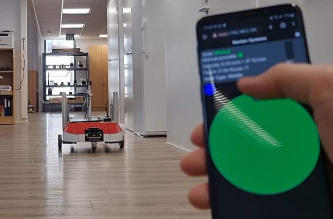
AGV is controlled manually to teach the environment and the trajectory for Navitrol
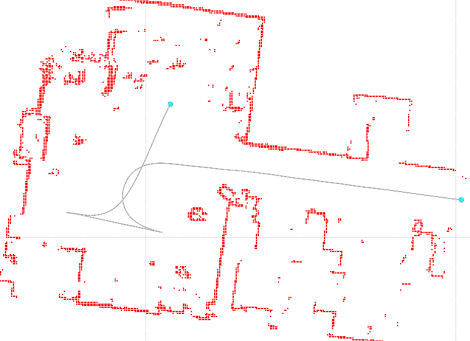
After teaching, Navitrol generated automatically the map and the trajectory performed by the user
Requirements
ROS2 Navigation2 HumbleDocker base image is installed- Powerful enough IPC
- Preferably processor from
Intel i3series or higher - 10 GB of free hard disk space
- Preferably processor from
Limitations
- Scanners:
- Only one scanner can be used for creating the map
- Scanner can not be installed upside down (without manual ROS configuration)
- Kinematics:
- Pivoting is not supported
- Small turning radius (< 0.5 m) can cause trajectory generation issues, especially close to the driving direction changing points
- Map:
- The bigger the map/area to record, the greater the need for more powerful IPC
Dependencies
- Docker Engine & Compose
- ROS
- Standalone (= Route Driver) enabled
Setup
First time
-
Install Docker Engine & Compose software into IPC if not yet done (requires internet connection)
-
Install
ROS2 Navigation2 HumbleDocker base image (ros2_navigation2_humble.tar.gz), if not yet done- Provided by Navitec
- Check with command
docker images, if the base image already exist
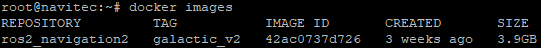
Base image is existing
- If the base image is not installed:
- Transfer
ros2_navigation2_humble.tar.gzto the IPC (into any directory) - Run command (as root user)
docker load -i ros2_navigation2_humble.tar.gz - Check with
docker images, that the base image got installed successfully
- Transfer
Quick setup
- Check, that
startNavitrol.shscript (located in/home/navitec/) has the line./ros_config/scripts/startRos.shat the end of the file - Install Navitrol_<version>.deb package
dpkg -i Navitrol_<version>.deb
- Run stop script
/home/navitec/ros_config/scripts/stopNavitrolAndRos.sh- Might require to be run with
sudoprefix if not run as root user
- Might require to be run with
- Set required parameters in
params.txtfile as described below- Note:
params_override.txtfile is not supported at the moment (for parameters used by ROS)
- Note:
Required parameters
Category: SLAM
| Name | Type | Required value | Description |
|---|---|---|---|
| ros_enabled | Integer | 1 | Enable Navitrol to communicate with ROS |
| ros_slam_enabled | Integer | 1 | Enable SLAM nodes to start up |
| ros_slam_scanner | Integer | 0-3 | Scanner selection for SLAM 0 - Rear 1 - Front 2 - Measurement 0 3 - Measurement 1 |
| ros_send_scan_data | Integer | 1/2/4/8 | Enable Navitrol to send scanner data to ROS (bitmap value) 1 - Rear (Bit 0) 2 - Front (Bit 1) 4 - Measurement 0 (Bit 2) 8 - Measurement 1 (Bit 3) |
Category: User interface
| Name | Type | Required value | Description |
|---|---|---|---|
| supervisor_eth_enabled | Integer | 1 | Communication with graphical user interface is enabled |
| supervisor_eth_ip | String | IP address of the UI | Graphical user interface IP address |
| supervisor_eth_port | Integer | 5015 | Graphical user interface IP port |
| supervisor_eth_server | Integer | 0 | Graphical user interface works as TCP client |
| veh_inte_error_message_type | Integer | 0 | Defines which error message will be sent: 0 = basic (201), 1 = with error levels (202) |
| veh_inte_heartbeat_interval | Integer | 1000 | Defines how often the error message is sent to supervisor [ms]. 0 = Periodic sending disabled |
Category: Other
| Name | Type | Required value | Description |
|---|---|---|---|
| route_driver_enabled | Integer | 1 | Enable Navitrol to drive autonomously by driving commands from UI |
How to use
| Step | Source | Input | Description |
|---|---|---|---|
| 1. | Terminal | cd /home/navitec/cd ros_config/scripts/./stopNavitrolAndRos.shcd /home/navitec/ | Stop Navitrol and ROS by running the stop script in Navitrol's installation directory |
| 2. | Terminal OR Windows | nano params.txtOR Notepad++ | Make sure, that the required parameters are set in params.txt as described above. There is no need for environment (env*.nte) and/or segment (seg_*.xml) file to exist beforehand in the IPC |
| 3. | Terminal | ./startNavitrol.sh | Start Navitrol and ROS by running the start script (which is automatically performed when powering up IPC) |
| 4. | AGV | Manual control | Drive the AGV manually (AGV's own controls, Navitrol Monitor, Web UI, ...) to the starting point from which the trajectory being recorded is desired to start |
| 5. | Windows | MCSClientTouchWPF.exe | Start Record & Play graphical user interface (= UI) software on Windows. The following window appears |
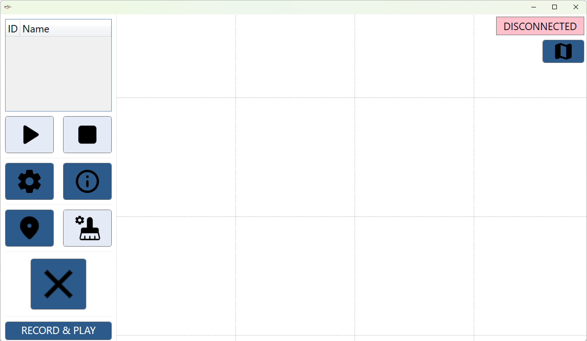
| Step | Source | Input | Description |
|---|---|---|---|
| 6. | UI | Click the Settings icon on the left side menu | |
| 7. | UI | <AGV-IP>5015navitecnavitrol | Set - Machine IP address - Port - User name - Password |
| 8. | UI | Click the Connect icon below to connect to Navitrol. The icon on the right-top corner of the window should turn from DISCONNECTED to CONNECTED | |
| 9. | UI | Click the Map view icon below the CONNECTED icon on the right-top corner to exit the Settings view | |
| 10. | UI | Click the RECORD & PLAY icon on the left-bottom corner to enter Record view | |
| 11. | UI | Click the REC icon on the left-top corner to start recording. The recording should start in few seconds, and the window look as below |
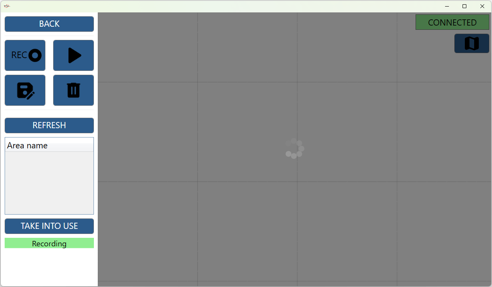
| Step | Source | Input | Description |
|---|---|---|---|
| 12. | AGV | Manual control | Drive the AGV manually (AGV's own controls, Navitrol Monitor, Web UI, ...) the path which is desired to be repeated later by Navitrol |
| 13. | UI | Once finished driving, click the Save icon on left-top corner | |
| 14. | UI | 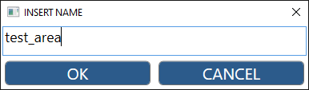 | A pop-window will appear requesting a name to be used for the recorded area. Type name and click OKNote: If the recorded area was big, the saving process can take up to half minute |
| 15. | UI | Refresh the list of existing area files on the left side by clicking REFRESH | |
| 16. | UI | 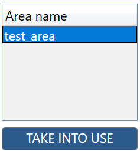 | Select the previously recorded area name and click TAKE INTO USE. The generated map and trajectory should become visible in a moment |
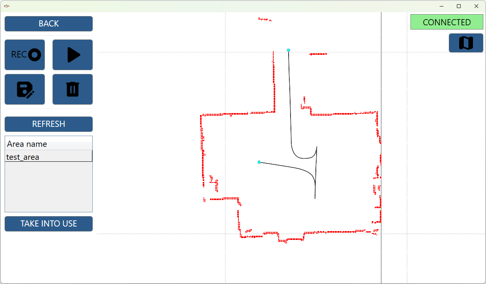
| Step | Source | Input | Description |
|---|---|---|---|
| 17. | AGV | Manual control | Drive the AGV manually (AGV's own controls, Navitrol Monitor, Web UI, ...) back to the starting point where the recording was started. Make sure, that the AGV is also oriented the same way as in the start of the recording |
| 18. | UI | Click the BACK icon on left-top corner to enter the main window for giving drive orders | |
| 19. | UI | + | Click the start symbolic point and the Position initialization icon to initialize the AGV position on the start of the recorded trajectory |

| Step | Source | Input | Description |
|---|---|---|---|
| 20. | UI | + | Click the end symbolic point and the Play icon to start automatic driving. Navitrol will repeat the same trajectory as performed by the user in manual control during the recording |
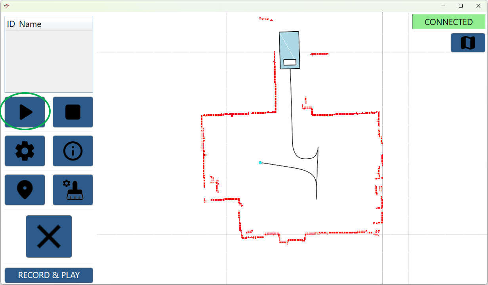
| Step | Source | Input | Description |
|---|---|---|---|
| 21. | UI | Alternatively, replay of the recorded area can be triggered directly by pressing the Play icon in the RECORD & PLAY view. This will automatically initialize the position of the AGV at the start symbolic point and give a drive order to the end symbolic point |
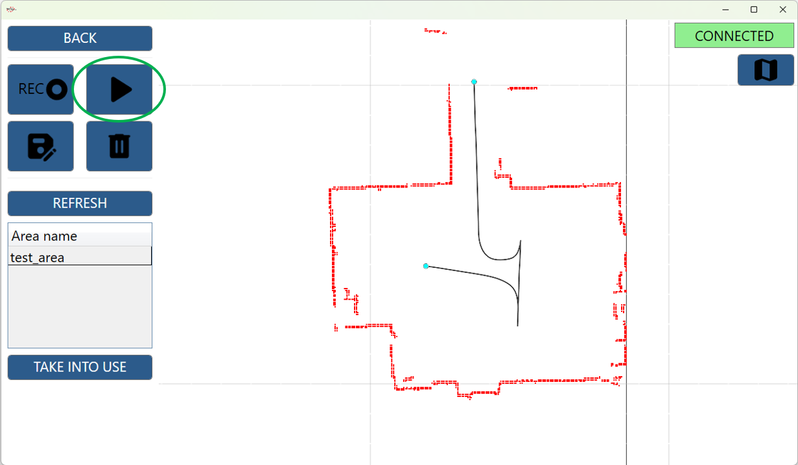
Additional info
-
Many areas can be recorded sequentially without the need of playing them in between
-
AGV pose initialization status
Initialized Not initialized 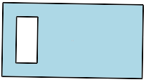 -
Recording can be aborted by clicking
Trash canicon -
Playing can be aborted by clicking
Stopicon -
Generated environment and segment files are stored in sub directory
slam_maps
Troubleshooting
- From Obstacle avoidance V2 document can be found more useful hints for Docker use / issue solving
Most common issues
- Click the
AGV Informationicon and check for active warnings and errors
AGV does not start driving
- Make sure AGV is physically at the starting symbolic point with right orientation
- Initialize position on the starting symbolic point
- Click the start symbolic point
- Click the
Position initializationicon
- Initialize position on the starting symbolic point
AGV stops completely during driving and does not reach the end symbolic point
- Check, that the generated trajectory does not have invalid direction change points (short tails / sharp corners)
- During teaching, there must be performed enough (0.5+ m) straight overlapping driving between the incoming and outgoing paths
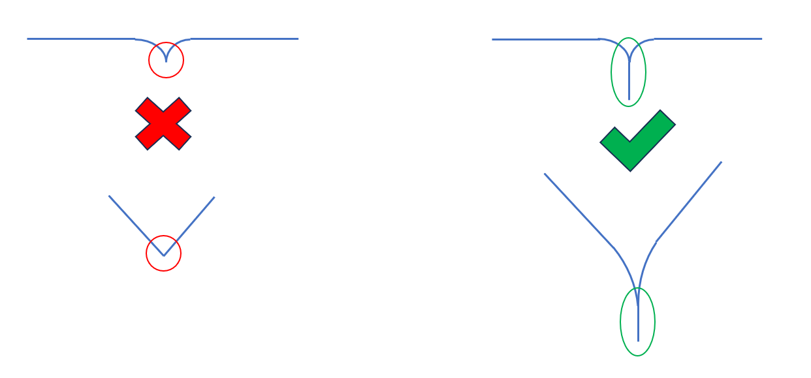
Map saving takes too much time (over maximum 30 seconds) on large maps (100+ * 100+ meters)
Try setting parameter F, ros_slam_map_resolution, 0.1 (min: 0.01, max: 0.1). Recommended/default value is 0.05. This parameter is not recommended to be modified (unless there is a clear need to reduce the resource usage of the IPC)
- Note for
0.1: The localization parameters are likely required to be tuned to work efficiently with the significantly smaller amount of environment points, otherwise- Position can be lost (too) easily
- Position confidence can drop significantly
- Note for
0.01: Decreasing the resolution does not automatically mean better quality of the generated map- For maps smaller than 50 * 50 meters, the minimum value can be tested (in case the default
0.05does not seem to provide accurate enough map)
- For maps smaller than 50 * 50 meters, the minimum value can be tested (in case the default